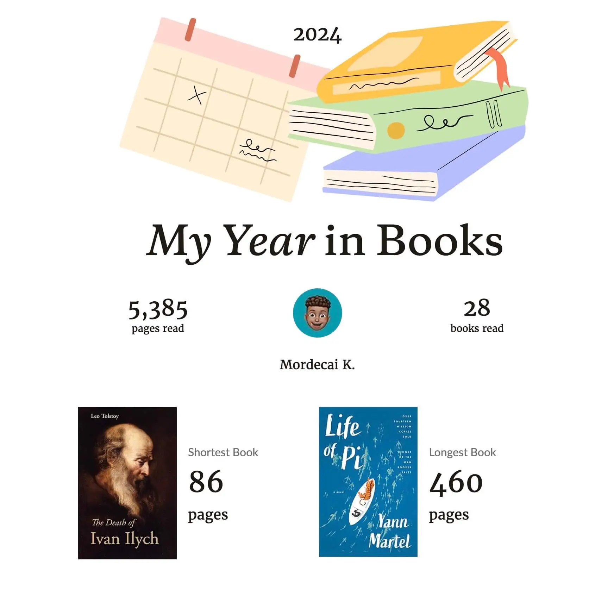
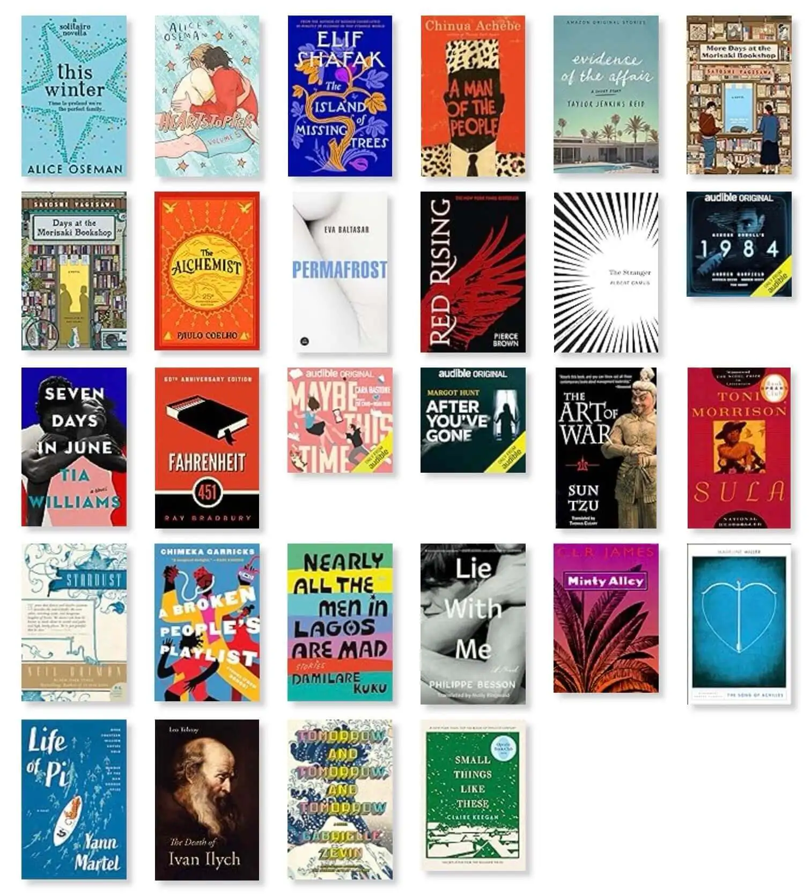
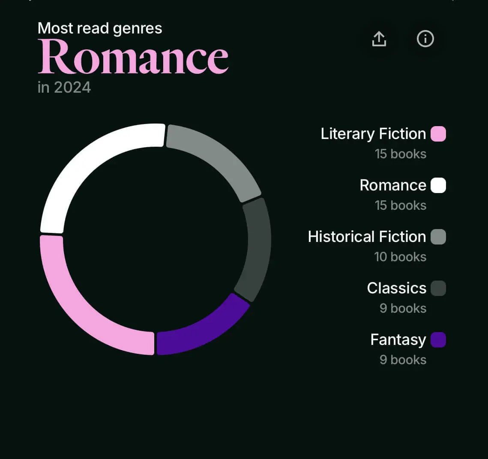
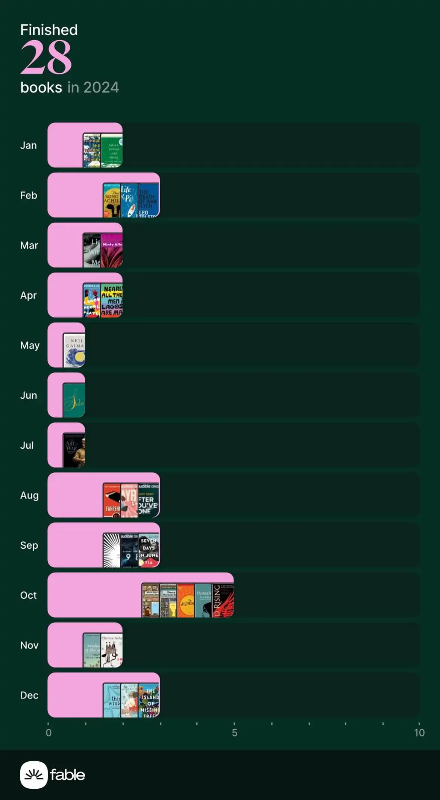

This was meant to be posted end of last year but as a result of the festivities and perhaps procrastination, here we are.
I wrapped up the year having read 28 books surpassing my reading goal of 20 books. That may sound impressive but my 2024 reads were filled with small and medium sized books with my average page count being 192 pages proving that my fear of chunky books remains present.

The books that really stood out for me and I highly recommend were Madeline Miller’s The Song of Achilles, Philip Besson’s Lie With Me, Ray Bradbury’s Fahrenheit 451, Pierce Brown’s Red Rising (which I intend to continue with the series) and Elif Shafak’s The Island of Missing Trees.

A film that I find amazing and I’ve watched more than once is Life of Pi. Why am I talking about a film? Well, I was rudely surprised that it’s actually based on a book. I read it and loved it especially the exploration of Pi’s relationship with religion which was only briefly mentioned in the film.
Anyway, my greatest discovery in the world of texts and characters was audiobooks as a direct result of a book slump.
As reading slumps go, I had one during a period of uncertainty mid-2024. I wasn’t interested in anything whatsoever and I had no way of getting out of this vicious rut. Out of nowhere, the least expected item came to my rescue - House of The Dragon.
I had never watched Game of Thrones and I wasn’t intending to. This was down to my preconceived notions, it being eight seasons long and the joke that is the series finale (spoiler alert: I watched all eight seasons in a week) but House of The Dragon was still fresh and enticing… I dove right in and binged season one, caught up with season two as it aired and after the final episode, I was sold on the entire Game of Thrones franchise but more so the books as well.
A friend suggested I should get an Audible free trial to read George R.R. Martin’s Fire & Blood and so I gave this a go. I got a wickedly nice three-month Audible Plus trial with two monthly credits. Since I didn't intend to keep the subscription, I hatched the quite original plan to "buy" all the chunky books on my to be read list. With that, I finally tried out some of the free books only available with my Audible Plus trial.
I had never seriously tried audiobooks before but what a lovely way to get off a reading slump! I listen to a lot of podcasts so this came naturally to me. I know some people don't rate audiobooks but isn’t the end goal to consume high quality books so if someone prefers it in audio form then let them be. Nevertheless, out of the need to be more attentive, my system was to listen to the books while following along the text on my Kindle and this served me well.
I highly recommend audiobooks to anyone who has second-guessed them or if you want to get off a reading slump.
Anyhow, here are two extra screenshots to summarise my 2024 reading, you can also have a look at my Goodreads profile for my book ratings/reviews or my 2024 Year in Books. Also, tell me about your 2025 reading goals/plans and recommend some reads you find interesting.
Cheers ✌️

